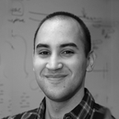
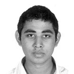
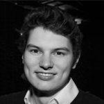
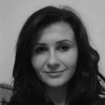
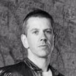

-
Dianbo Liu
-
 Gillian Dunphy
Gillian Dunphy
-
 Stefan Tomov
Stefan Tomov
-
 Thiago Britto-Borges
Thiago Britto-Borges
-
 Sarah-Lena Offenburger
Sarah-Lena Offenburger
-

Fábio Madeira
-
 Darya Baranovka
Darya Baranovka
-

Kushal Rugjee
-

Sam Watkins
-

Teodora Maghear
-

Alasdair McGill
-
 Yuri Alexandrov
Yuri Alexandrov
Dianbo Liu is the licence holder for the
upcoming TEDxUniversityofDundee event. He is the leader
of the team and is currently studying for a PhD within the
Computational and Physical Biology department at the
University of Dundee. He is interested in making links
among seemingly unrelated fields, and therefore come up
with innovative and useful inventions.
Gillian Dunphy was born and raised in Glasgow but was
compelled to make the lengthy journey to Dundee after being
lured by its East Coast charm. She is currently studying for
a PhD in Immunology at the University of Dundee. She is
currently managing a team of student volunteers in the areas
of Graphic Design and Stage Design. She is also involved in
marketing and speaker recruitment.
Stefan Tomov is a recent University of Dundee
graduate in the field of Economics and Politics. He comes
from Bulgaria and is currently the Deputy President of
Dundee University Students' Association (DUSA). Stefan is
responsible for securing the logistics required to make
TEDxUniversityofDundee a resounding success.
Thiago Britto-Borges is a Brazilian PhD student within
the Computational Biology department of the University of Dundee
He has an inexhaustible passion for learning and enjoys spreading knowledge. Thiago
is responsible for developing and designing the TEDxUniversityofDundee website.
Sarah-Lena Offenburger is pursuing a PhD in
Neurobiology at the University of Dundee. When Sarah is not
in the lab, you will probably find her doing sports, taking
pictures or just having a coffee with friends. Sarah is a
curator within our team and is responsible for recruiting
and liasing with the speakers of the event.
Originally from Portugal, Fábio Madeira is
currently studying for a PhD within the Cell and Molecular
Biology department at the University of Dundee,
specialising in Computational Biology. Alongside with Thiago, he helps managing and developing the website of the event.
is the president of Enterprise
Gym which is a University of Dundee department where
students learn about entrepreneurship. She comes from the
small and pretty town of Liepaya, which is located on the
Latvian coast of the Baltic Sea. Darya is responsible for
the recruitment of volunteers and organising the logistics
of the event.
moved from the island of
Mauritius to equally sunny Dundee to pursue a PhD in
Microbiology. His role in the team is to co-ordinate the
overall organisation of the TEDx event and to ensure that
progress is being made.
is currently studying Computer Science at the University of Dundee.
He is in his third year now and interested in Web
Programming, Product Development and Entrepreneurship. Sam
is our Social Media Officer, taking care of our Twitter and
Facebook accounts.
is the Enterprise Assistant & Coordinator
at the Enterprise Gym, University of Dundee.
Her perseverance and passion for entrepreneurship and innovation has seen her work her way up in the roles in the department.
She received her BSc in business Economics with marketing from Dundee University in 2014. Dora is actively contributing her
expertise in a number of areas of the project.
is Head of Enterprise &
Entrepreneurial Strategy at the University of Dundee.
Not a man to sit about, Alasdair has a brain that's always
busy and he loves thinking of creative ways to make a
difference. As well as his role at the university, Alasdair
is also a director and founder of several companies in
industries as diverse as retail, software, sports and
financial services. He is a formidable adviser within our
team.
is currently pursuing a master's
degree in Data Engineering. He studies Data because he likes
to observe and find patterns in the environment that
surrounds us. Yuri serves as a curator along with Sarah in
our team. He is involved in the recruitment of speakers.